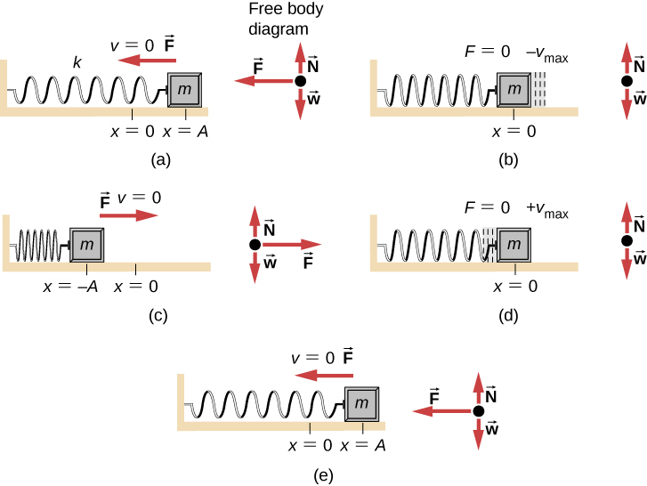

Simple Harmonic Motion (SHM) describes a type of oscillatory motion where the restoring force acting on an object is both directed toward the equilibrium position and proportional to the object’s displacement from that position.
This type of force leads to smooth, sinusoidal motion, and occurs commonly in systems like springs and pendulums under ideal conditions.
According to Hooke’s Law, the restoring force in a spring system is:
Combining this with Newton’s Second Law \( F = ma \) and recognizing that acceleration is the second derivative of position, we get:
Dividing both sides by \( m \) leads to:
The term \( \frac{k}{m} \) represents the square of the angular frequency \( \omega \), so we write:
This will be discussed more in the other key topics
This differential equation tells us that the object’s acceleration is always directed opposite to its displacement and becomes larger as the object moves further from equilibrium. That’s the essence of a “restoring” force—it tries to pull the object back to the center.
The linear nature of the force-displacement relationship is what makes the motion simple and harmonic. Nonlinear restoring forces lead to more complex motion patterns and are not considered SHM.
A system exhibits simple harmonic motion when:
These conditions provide the mathematical and physical foundation for analyzing oscillatory systems across physics.